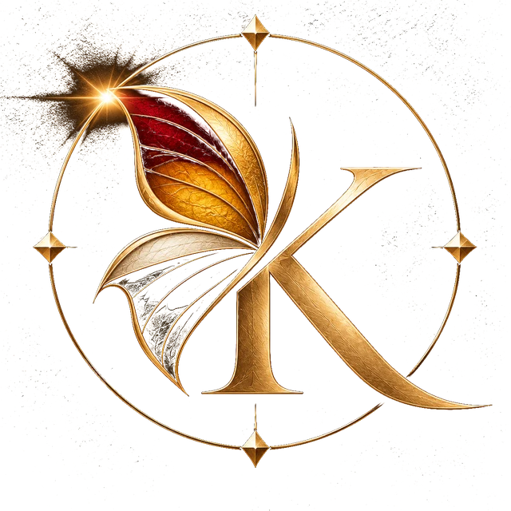

Krysalide · Journal de bord
Une entrée à la fin de chaque séance. Une journée sans activité, faute d'opportunités, reste une entrée : s'abstenir fait partie de la méthode.
Ce journal raconte ce qui a eu lieu. Il ne dit rien de ce qui va avoir lieu.
La première entrée paraîtra à la fin de la première séance.
Le compte, ses marchés et sa transparence
Retour à Krysalide →